Introduction : qu’est-ce qu’une théorie du complot ?
Structure du cours
Qu’est-ce qu’une théorie du complot ?
Comment fonctionne la Fake News ?
La rhétorique au service du complotisme.
Les liens entre politique et complotisme.
Qu’attendez-vous de ce cours ?
Écrivez, on affiche au fur et à mesure.
Qu’est-ce qu’une théorie du complot ?
Je vais vous donner des exemples d’évènements et des affirmations, et vous allez me dire si ce sont, pour vous, des théories du complot.
Complot, ou théorie du complot ?
Le scandale du Watergate
Théorie du complot
Complot réel
Ni l’un ni l’autre
Un complot réel : une coordination secrète, établie par l’enquête et par les procès.
Complot, ou théorie du complot ?
Les Illuminati contrôlent secrètement le monde
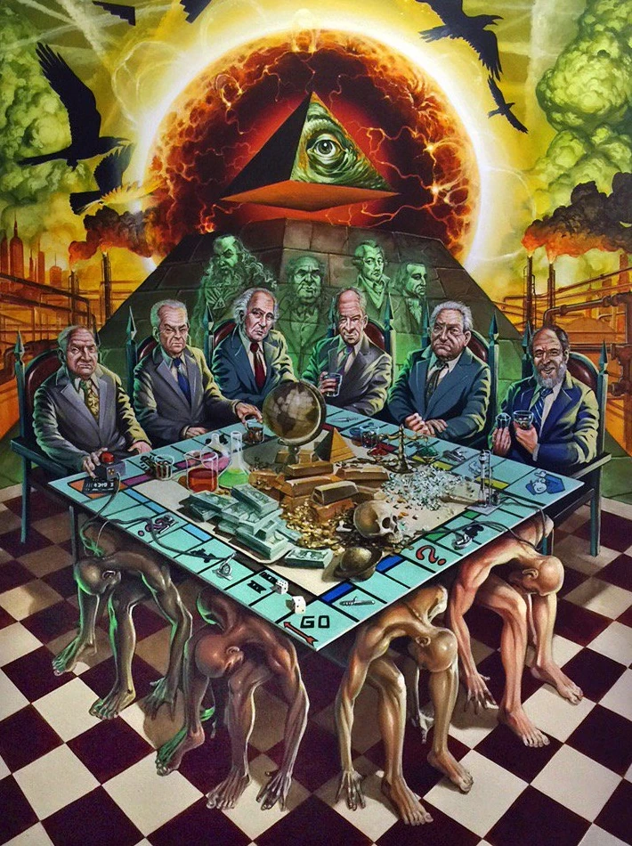
Théorie du complot
Complot réel
Ni l’un ni l’autre
Une théorie du complot : aucun élément vérifiable, et une explication qui englobe tout.
Complot, ou théorie du complot ?
Les institutions financières contrôlent le monde.
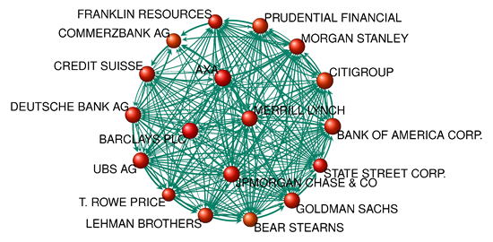
Théorie du complot
Complot réel
Ni l’un ni l’autre
Affirmation vague : ni secret, ni acteurs nommés. Que veut dire « contrôler » ici ?
Complot, ou théorie du complot ?
Les institutions financières contrôlent secrètement le monde.
Théorie du complot
Complot réel
Ni l’un ni l’autre
Un mot change tout : « secrètement » fait basculer l’affirmation du côté du complot.
Complot, ou théorie du complot ?
Les institutions financières contrôlent en partie le monde.
Théorie du complot
Complot réel
Ni l’un ni l’autre
Un constat banal, documenté, et que personne n’a besoin de cacher.
Complot, ou théorie du complot ?
L’alunissage américain de 1969 est faux.
Théorie du complot
Complot réel
Ni l’un ni l’autre
Une théorie du complot : il faudrait que des dizaines de milliers de personnes se taisent depuis 1969.
Complot, ou théorie du complot ?
Les six voyages de la Terre à la Lune, entre 1969 et 1972, sont faux.
Théorie du complot
Complot réel
Ni l’un ni l’autre
Même théorie, en plus large : plus le complot supposé est gros, moins il est tenable.
Complot, ou théorie du complot ?
Le 11 septembre a été organisé par le gouvernement américain.
Théorie du complot
Complot réel
Ni l’un ni l’autre
Une théorie du complot, parmi les plus étudiées par la recherche.
Complot, ou théorie du complot ?
Le 11 septembre a été organisé par Al-Qaida.
Théorie du complot
Complot réel
Ni l’un ni l’autre
Un complot réel : une attaque coordonnée en secret par des acteurs identifiés.
Complot, ou théorie du complot ?
Le 11 septembre a été organisé par la Chine.
Théorie du complot
Complot réel
Ni l’un ni l’autre
Une théorie du complot : la même forme, mais aucun élément pour l’étayer.
Complot, ou théorie du complot ?
Les compagnies pétrolières ont fait pression sur le gouvernement américain pour envahir l’Irak.
Théorie du complot
Complot réel
Ni l’un ni l’autre
Du lobbying, largement documenté et rarement secret : ce n’est pas la même chose qu’un complot.
Complot, ou théorie du complot ?
La princesse Diana a été secrètement assassinée par la famille royale.
Théorie du complot
Complot réel
Ni l’un ni l’autre
Une théorie du complot : les enquêtes officielles, française puis britannique, ont écarté l’hypothèse d’un assassinat.
Complot, ou théorie du complot ?
Les aliens existent, mais leur existence est cachée par le gouvernement.
Théorie du complot
Complot réel
Ni l’un ni l’autre
Une théorie du complot : l’élément « caché par le gouvernement » est invérifiable par construction.
Complot, ou théorie du complot ?
Les aliens existent.
Théorie du complot
Complot réel
Ni l’un ni l’autre
Une hypothèse, pas un complot : personne n’est accusé de cacher quoi que ce soit.
Complot, ou théorie du complot ?
La CIA est responsable de la mort du président John F. Kennedy.
Théorie du complot
Complot réel
Ni l’un ni l’autre
Une théorie du complot : la plus ancienne des grandes théories contemporaines.
Complot, ou théorie du complot ?
La CIA est responsable du coup d’État au Guatemala en 1954.
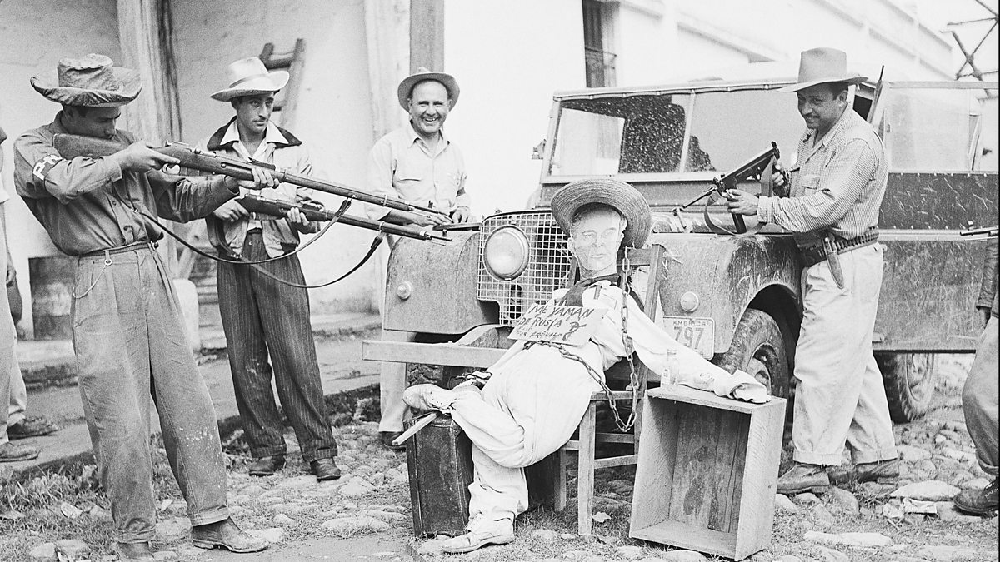
Théorie du complot
Complot réel
Ni l’un ni l’autre
Un complot réel : l’opération PBSuccess, reconnue et déclassifiée depuis.
Complot, ou théorie du complot ?
La NSA espionne secrètement des millions de personnes.
Théorie du complot
Complot réel
Ni l’un ni l’autre
Un complot réel : révélé en 2013 par les documents d’Edward Snowden.
Complot, ou théorie du complot ?
Le crash de l’avion transportant Evgueni Prigojine n’est pas un accident et fut vraisemblablement commandité par le Kremlin.
Théorie du complot
Complot réel
Ni l’un ni l’autre
Vraisemblable, mais non prouvé : une hypothèse de complot peut rester une hypothèse.
Complot, ou théorie du complot ?
La tentative d’assassinat de Donald Trump a été fomentée par les démocrates.
Théorie du complot
Complot réel
Ni l’un ni l’autre
Une théorie du complot : l’enquête du FBI a conclu que le tireur avait agi seul.
Complot, ou théorie du complot ?
La tentative d’assassinat de Donald Trump a été mise en scène par les républicains.
Théorie du complot
Complot réel
Ni l’un ni l’autre
Une théorie du complot aussi : un spectateur a été tué ce jour-là. La même image nourrit deux complots opposés.
Complot, ou théorie du complot ?
Le meurtrier de Charlie Kirk a été manipulé par la propagande de gauche pour le tuer.
Théorie du complot
Complot réel
Ni l’un ni l’autre
Une lecture politique, pas un complot démontré : aucune coordination secrète n’a été établie.
Complot, ou théorie du complot ?
Le père Noël offre des cadeaux aux enfants sages du monde entier.
Théorie du complot
Complot réel
Ni l’un ni l’autre
Coordination secrète de plusieurs personnes… mais sans but malveillant. Il manque une pièce à la définition.
Quelles sont, selon vous, les caractéristiques d’une théorie du complot ?
Définition
Un complot
Coordination en secret de plusieurs personnes, généralement puissantes, dans le but de porter atteinte à une personne ou un groupe de personnes.
Définition
« Théorie »
Définition commune : quelque chose de possible, synonyme d’hypothèse.
Définition scientifique : un modèle explicatif, qui peut être vrai ou faux selon la solidité du modèle.
Définitions des théories du complot
« Tentative pour expliquer les causes ultimes d’évènements sociaux et politiques importants, et de circonstances, par l’affirmation d’une intrigue par deux ou plusieurs acteurs puissants. » (Douglas et al., 2019)
« Une attribution d’une intention délibérée à quelque chose qui est plus susceptible d’être accidentel ou non intentionnel. Et, pour affiner cette définition, on pourrait ajouter : l’attribution d’une action secrète à une partie qui pourrait être bien plus raisonnablement expliquée comme l’action moins secrète et moins compliquée d’une autre. » (Aaronovitch, 2010)
Il y a donc deux manières de voir les théories du complot
Soit il s’agit « simplement » d’une tentative d’explication, qui peut être vraie ou fausse, mais qui n’est dans tous les cas pas prouvée.
Soit il s’agit d’une hypothèse par essence fausse, ce qui la distingue du « complot », qui est vrai.
C’est quoi, être « complotiste » ?
Ce que ce n’est pas : penser que les politiciens mentent parfois, que les médias se trompent parfois.
Croire à une théorie du complot fait-il de nous un complotiste ?
Ma définition : est complotiste une personne dont le prisme principal d’explication des évènements du monde est le complot. C’est un postulat par défaut.
« Mentalité complotiste »
Croire qu’un complot est possible ne fait pas de nous un complotiste, d’autant que certains complots sont réels.
Mais une personne avec une « mentalité complotiste » va postuler l’existence de complots pour expliquer le monde.
Que pensez-vous des affirmations suivantes ?
« Les théories du complot sont un phénomène récent. »
Vrai
Faux
Non : elles sont aussi vieilles que la politique
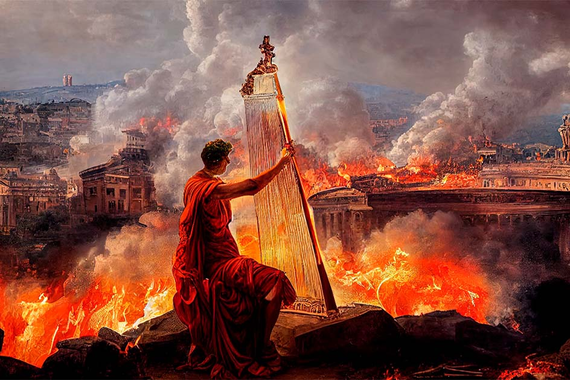
Une des plus anciennes et célèbres théories du complot est l’idée que l’empereur Néron a volontairement mis le feu à Rome.
Cet évènement fut suivi d’une autre théorie du complot : les chrétiens furent accusés à leur tour d’avoir mis le feu à Rome.
« Les théories du complot sont un phénomène occidental. »
Vrai
Faux
Non : on en trouve partout
De nombreuses études montrent que les théories du complot sont universelles et existent dans toutes les sociétés (Van Prooijen & Douglas, 2018).
Au Moyen-Orient (Nyhan & Zeitzoff, 2018),
en Asie du Sud (Reid, 2010),
en Afrique (Fassin, 2010),
en Amérique latine (Carey, 2019).
« Il n’y a jamais eu autant de personnes croyant aux théories du complot. »
Vrai
Faux
Là encore, les données ne le montrent pas
De nombreuses études montrent que le nombre de personnes qui croient aux théories du complot est plutôt stable depuis plusieurs décennies.
« Little evidence has been provided to demonstrate that beliefs in conspiracy theories have, in fact, increased over time. » (Uscinski, 2022)
Le complotisme est-il une histoire d’intelligence ?
American Psychological Association
Définition de l’intelligence
« The ability to derive information, learn from experience, adapt to the environment, understand, and correctly utilize thought and reason. »
« La capacité à déduire des informations, apprendre de l’expérience, s’adapter à l’environnement, comprendre et utiliser correctement la pensée et la raison. »
https://dictionary.apa.org/intelligence
Comment mesurer le lien entre l’intelligence et le complotisme ?
Complotisme
?
QI
Comment pourrait-on mesurer « l’intelligence » ?
Devinette éclairQuick riddle
Répondez vite, sans réfléchir…Answer fast, without thinking…
Une raquette et une balle coûtent 12 € au total. La raquette coûte 10 € de plus que la balle. Combien coûte la balle ?A bat and a ball cost €12 in total. The bat costs €10 more than the ball. How much does the ball cost?
Deux façons de penserTwo ways of thinking
Le système intuitifThe intuitive system
Fonctionne vite ! Consomme peu d'énergie. Peut faire des erreurs.Works fast! Uses little energy. Can make mistakes.
Le système analytiqueThe analytical system
Fonctionne lentement. Consomme beaucoup d'énergie. Est plus rationnel, plus analytique.Works slowly. Uses a lot of energy. Is more rational, more analytical.
Swami et al., 2014
La pensée analytique et la pensée complotiste
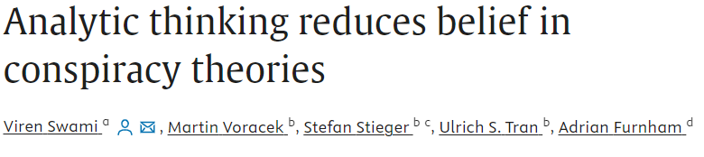
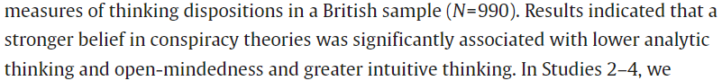
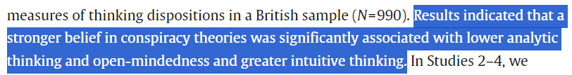
Analytic thinking reduces belief in conspiracy theories (Swami et al., 2014). Van Prooijen et al., Cognitive processes.
Intelligence verbale et pensée complotiste
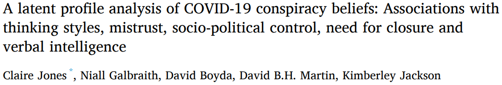
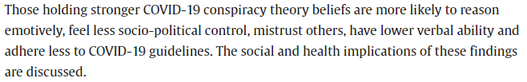
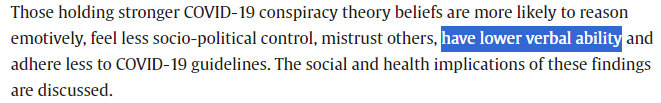
Mémoire de travail, besoin de cognition et pensée complotiste
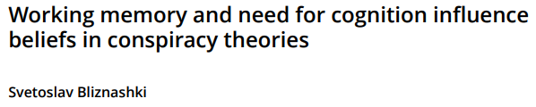
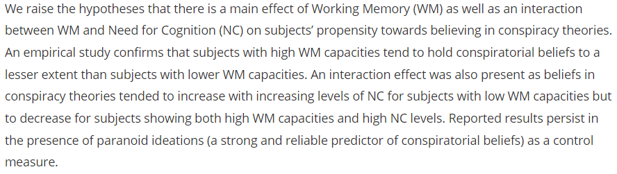
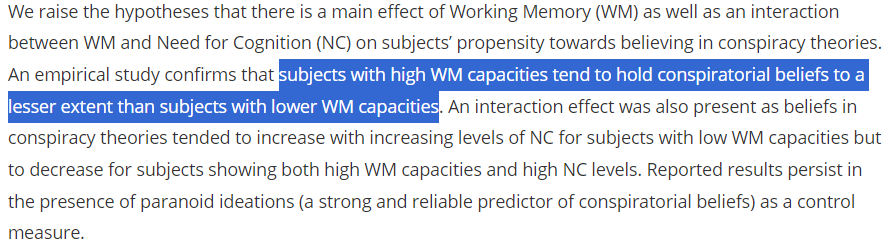
tandfonline.com/doi/full/10.1080/20445911.2024.2335108 ; Wagner-Egger et al., 2019 ; Brotherton & French, 2015 ; Imhoff & Bruder, 2014 ; Douglas et al., 2015 ; Tempel & Alcock, 2015. Contre : Dieguez et al., 2015.
Le complotisme et le niveau d’éducation
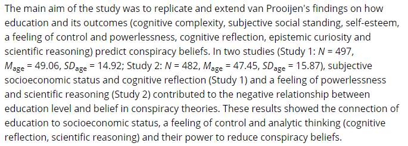
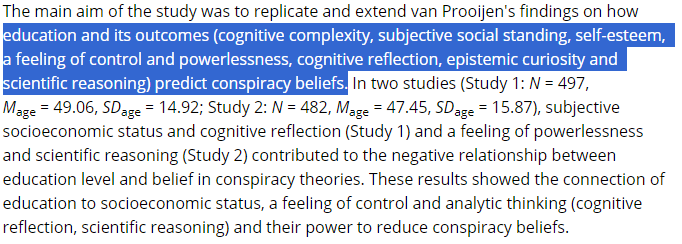
Van Prooijen, Why Education Predicts Decreased Belief in Conspiracy Theories (2016) ; Douglas et al., 2016.
Un petit jeu pour commencerA little game to start with
Les gens qui s'endorment avec les chaussures aux pieds ont plus de chances d'avoir mal à la tête en se réveillant le lendemain.People who fall asleep with their shoes on are more likely to wake up with a headache the next day.
Pourquoi ?Why?
Est-ce que dormir avec ses chaussures provoque le mal de tête ? Ou bien y a-t-il autre chose qui explique les deux à la fois ?Does sleeping with your shoes on cause the headache? Or is there something else that explains both at once?
Trois mots à ne pas confondreThree words not to confuse
Deux évènements arrivent en même temps, sans lien entre eux.Two events happen at the same time, with no link between them.
CorrélationCorrelation
Deux évènements sont liés statistiquement, sans que l'un provoque l'autre.Two events are statistically linked, without one causing the other.
CausalitéCausation
L'un des évènements provoque réellement le second.One of the events genuinely causes the other.
Ce que mesurent vraiment ces études
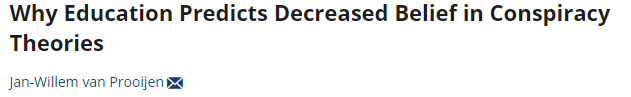
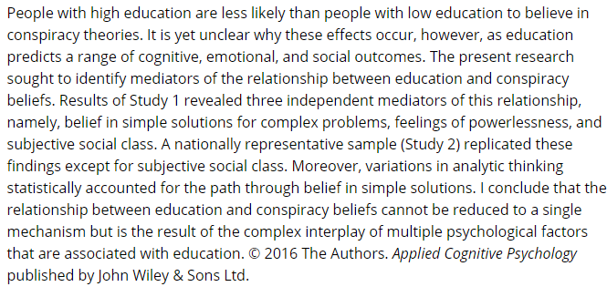
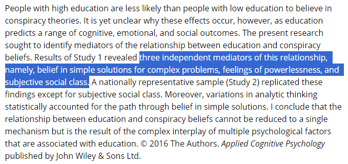
Échelle individuelle
Les facteurs du complotisme, chez une personne
Cognitifs : rationalité, mémoire de travail, désir de cognition.
Cliniques : paranoïa, schizotypie.
Motivationnels : besoin de contrôle, estime de soi, divertissement.
Traits de personnalité : narcissisme, narcissisme collectif, neuroticisme.
Dieguez et Delouvée, Psychologie du complotisme. Hornsey et al., Individual, intergroup and nation-level influences on belief in conspiracy theories.
Trois échelles d’analyse
Échelle individuelle : ce qui se joue dans une tête.
Échelle de groupe : endogroupe contre exogroupe.
Échelle internationale : PIB bas, pays collectiviste, pays autoritaire, corruption élevée, confiance politique faible.
Imhoff et al., 2022
Mentalité complotiste et croyances complotistes ne sont pas la même chose
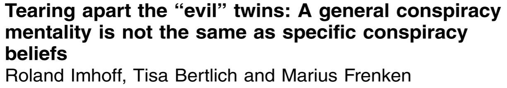
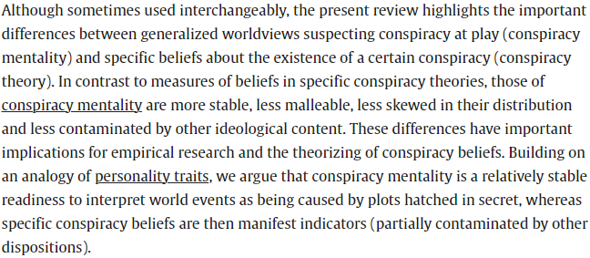
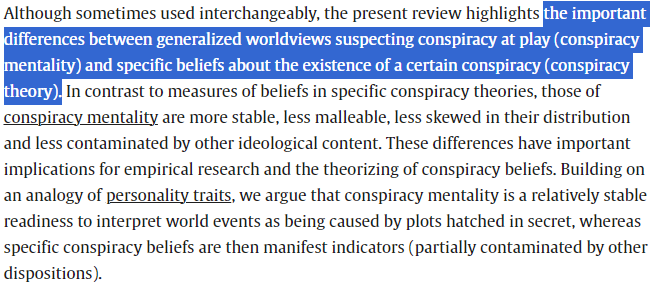
Tearing apart the “evil” twins: a general conspiracy mentality is not the same as specific conspiracy beliefs (Imhoff et al., 2022).
Ce que montrent les données
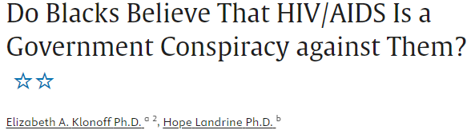
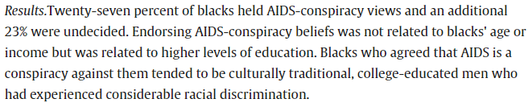
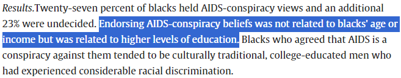
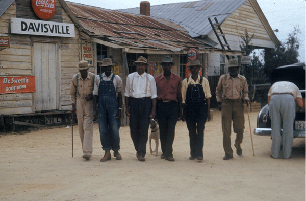
Une étude sur le complotisme et le VIH
Le degré de connaissance de l’étude.
Le degré de connaissance du VIH.
Le degré de complotisme concernant le VIH.
Résultats
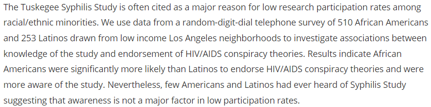
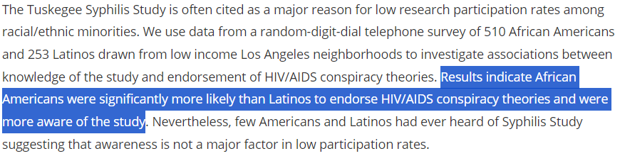
Attention : cette étude possède de nombreuses limites, notamment le fait que les connaissances mesurées sont parcellaires : elles peuvent être corrélées à une pensée complotiste sans en être la cause.
Corruption, régimes autoritaires et complotisme
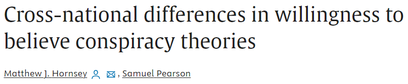
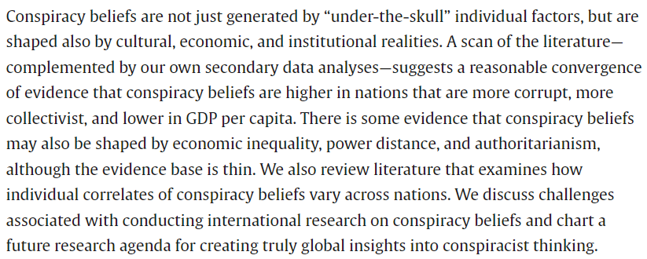
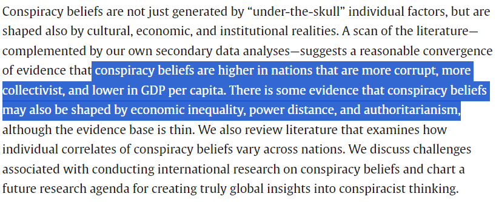
En conclusion
Oui, on peut tracer des liens entre croyances complotistes et intelligence.
C’est un facteur parmi beaucoup d’autres.
Il est intéressant de se demander pourquoi nous nous focalisons sur cette approche.
Une vision globale du phénomène est essentielle si nous voulons lui apporter une réponse.
Van Prooijen & Douglas, 2018
Les théories du complot sont…
Conséquentielles : les personnes qui y croient agissent conformément à ces croyances.
Universelles : elles ne sont pas restreintes à notre lieu ni à notre époque.
Émotionnelles : la pensée y est plus intuitive qu’analytique.
Sociales : elles consolident le groupe interne et antagonisent le groupe externe.
Les croyances vont rarement seules
Les personnes qui croient en une théorie du complot sont plus susceptibles de croire en d’autres théories du complot.
Les personnes qui croient au paranormal sont plus susceptibles de croire en des théories du complot.
Les personnes qui croient en des pseudo-sciences sont plus susceptibles de croire en des théories du complot.
Andrew Wakefield
Andrew Wakefield
Chercheur britannique en médecine.
Il affirme avoir établi une relation de cause à effet entre le vaccin rougeole-oreillons-rubéole (ROR) et ce qu’il appelle « l’entérocolite autistique ».
Le résultat de ses travaux est publié en 1998 dans The Lancet, prestigieuse publication internationale de médecine générale.
Puis…
Son étude est critiquée dès l’année suivante par les chercheurs qui ont contribué à l’écrire.
On révèle des conflits d’intérêt de Wakefield.
Comment va-t-on faire un lien avec le complotisme ?
À l’échelle individuelle
Approche cognitive
Les personnes qui croient aux théories du complot ont tendance à avoir une réflexion « intuitive » plus qu’analytique, basée sur l’émotion, et à faire des erreurs d’heuristique de pensée (« rien n’arrive par hasard »).
Hornsey et al., 2023 : Individual, intergroup and nation-level influences on belief in conspiracy theories.
À l’échelle individuelle
Approche clinique
Il y a des corrélations entre de nombreuses pathologies mentales et la croyance complotiste (cela ne veut pas dire que tous les complotistes ont des pathologies).
Liens entre un état émotionnel stressé, la dépression, et le complotisme.
À l’échelle individuelle
Approche motivationnelle
Les théories du complot seraient un moyen de reprendre le contrôle si l’on se sent déclassé (ces résultats sont remis en question).
Elles permettraient également d’obtenir une validation sociale.
Enfin, les théories du complot sont distrayantes.
À l’échelle individuelle
Traits de personnalité
Aucun lien avec les traits classiques de la personnalité (les « Big Five »).
On trouve des liens avec la « triade sombre » : narcissisme, machiavélisme, psychopathie.
Statistiquement, les complotistes sont donc plus « égoïstes », privilégiant leur propre intérêt par rapport à celui des autres.
Dynamique intergroupe
Endogroupe et exogroupe
Les gens sont davantage convaincus que les personnes du groupe extérieur sont capables de conspiration, et moins enclins à croire leur propre groupe capable de telles actions.
Dans les années 2000, seuls 22 % des Canadiens pensaient que le 11 septembre était un coup des Américains, contre 73 % des personnes interrogées dans sept pays musulmans.
Sunstein, C. R. & Vermeule, A. Conspiracy theories: causes and cures. J. Polit. Phil. 17, 202–227 (2009).
Une hypothèse, contestée
Elle vient de la « psychologie évolutionnaire » : il serait préférable de voir des menaces dans le groupe extérieur même si elles sont inexistantes.
Plus un groupe se sent menacé, plus il va croire aux théories du complot.
C’est pourquoi les personnes victimes de discriminations ont davantage tendance à croire aux théories du complot.
À l’échelle internationale
Ces résultats sont à prendre avec précaution : il est très difficile de savoir qui influence quoi à ce niveau, il y a beaucoup trop de facteurs.
Mais voilà ce qu’on sait.
Les gens croient davantage aux théories du complot lorsque…
les indicateurs économiques sont bas (PIB) ;
la perception d’inégalités économiques est forte ;
la confiance dans les institutions politiques est faible ;
le pays possède un degré de corruption élevé ;
le pays est davantage « collectiviste » qu’individualiste ;
les théories du complot concernent un pays ennemi.
Cours 2
Fake News, complotisme et esprit critique
Click to play the video.
Fixe… ou en mouvement ?
DéfinitionDefinition
Qu'est-ce qu'une Fake News ?What is a fake news story?
Une information qui est en contradiction avec l'état actuel des connaissances sur un sujet, partagée parfois de bonne foi, même si on ne peut pas la vérifier par nous-même.A piece of information that contradicts the current state of knowledge on a topic, sometimes shared in good faith, even when we can't verify it ourselves.
Quels sont les critères pour valider l'information ?What criteria help us validate information?
Mais attention…But be careful…
Le réflexe : vrai, ou faux ?
VRAI
FAUX
Mais NOTRE perception du vrai et du faux dépend de beaucoup de paramètres
Qu’est-ce que je juge crédible ?
Ce que je juge crédible dépend de ce que je sais déjà,
de qui me le dit,
et de ce que j’ai envie de croire.
Crédible ≠ Vrai
Une information peut être parfaitement crédible et complètement fausse. Et l’inverse aussi.
Qu’est-ce qui est une Fake News ?
Vrai ou faux ? (1/7)True or false? (1/7)
Emmanuel Macron est président de la République.Emmanuel Macron is President of the Republic.
Vrai ou faux ? (2/7)True or false? (2/7)
Le plateau de Gizeh se trouve en Égypte.The Giza plateau is located in Egypt.
Vrai ou faux ? (3/7)True or false? (3/7)
Le président a rencontré un alien.The president met an alien.
Vrai ou faux ? (4/7)True or false? (4/7)
Le soleil est une étoile.The sun is a star.
Vrai ou faux ? (5/7)True or false? (5/7)
L'étoile du berger est une étoile.The "shepherd's star" is a star.
Vrai ou faux ? (6/7)True or false? (6/7)
L'association des Végans aux États-Unis demande la fin des biscuits en forme d'animaux.A vegan association in the US is demanding an end to animal-shaped biscuits.
Vrai ou faux ? (7/7)True or false? (7/7)
Il existe une espèce de méduse immortelle.There is a species of immortal jellyfish.
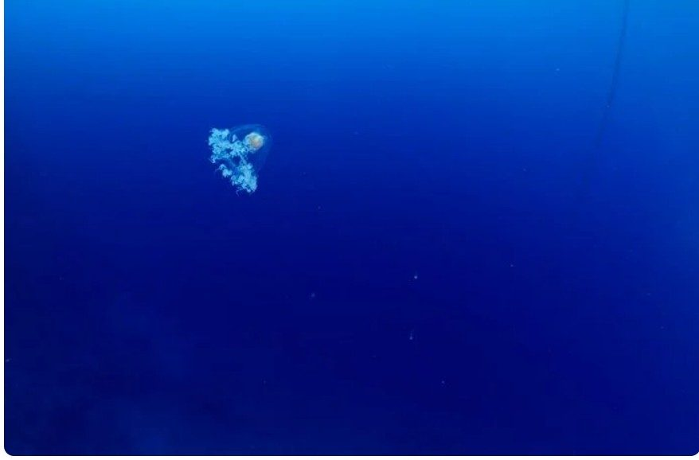
Vrai ou faux ?
Les chauves-souris sont aveugles.
Vrai
Faux
Faux. Elles voient, et complètent leur vue par l’écholocation.
Vrai ou faux ?
Les pieuvres ont trois cœurs.
Vrai
Faux
Vrai. Un cœur principal, et un pour chacune de leurs deux branchies.
Vrai ou faux ?
Le terme « sushi » désigne « poisson cru » en japonais.
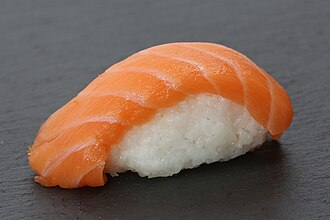
Vrai
Faux
Faux. « Sushi » désigne le riz vinaigré. Le poisson cru, c’est le sashimi.
Vrai ou faux ?
L’eau tourbillonne dans un sens différent selon l’hémisphère (effet Coriolis).
Vrai
Faux
Faux à l’échelle d’un lavabo : la force de Coriolis y est négligeable devant la forme du bac et le mouvement initial de l’eau.
Vrai ou faux ?
Nous avons créé des chats fluorescents.
Vrai
Faux
Vrai. Des chats transgéniques fluorescents ont été produits en laboratoire, pour la recherche sur le sida félin.
Vrai ou faux ?
La mousse sur les arbres pousse toujours au nord.
Vrai
Faux
Faux. Elle pousse du côté le plus humide, qui dépend du relief, du vent et de l’ombre.
Vrai ou faux ?
Les pyramides ont été construites par des extra-terrestres.
Vrai
Faux
Faux. Et c’est une théorie du complot de plein droit : elle suppose une dissimulation générale des égyptologues.
Vrai ou faux ?
Les pyramides ont été construites par des esclaves.
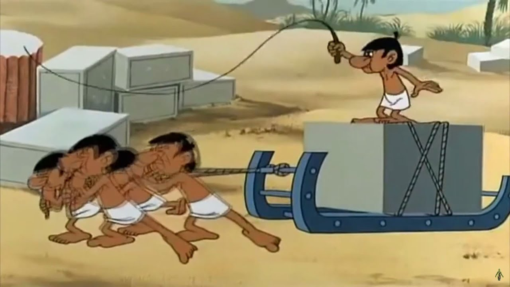
Vrai
Faux
Faux, au moins en partie : les fouilles montrent des ouvriers logés, nourris et soignés, pas des esclaves.
Quelle photo est en IA, quelle photo est réelle ?
Vraie photo, ou générée par IA ?
Vraie photo
Générée par IA
Vraie photo, ou générée par IA ?
Vraie photo
Générée par IA
Vraie photo, ou générée par IA ?
Vraie photo
Générée par IA
Celle-ci est une vraie photo. Le plus difficile n’est pas de repérer l’IA : c’est d’accepter qu’on ne sait pas.
2
Au-delà du vrai / faux
La Terre tourne autour du Soleil en 365 jours.
Vrai
Faux
Presque : 365,2422 jours. C’est pour cela qu’il existe des années bissextiles. « Vrai » et « faux » ne suffisent pas toujours.
La Terre est ronde.
Vrai
Faux
Presque : c’est un géoïde, légèrement aplati aux pôles. L’approximation est utile, mais c’est une approximation.
On ne peut pas respirer et avaler en même temps.
Vrai
Faux
Vrai chez l’adulte… mais faux chez le nourrisson, qui peut téter et respirer en même temps. Le contexte change la réponse.
Les chiens ne transpirent pas.
Vrai
Faux
Presque : ils transpirent très peu, par les coussinets. Ils se refroidissent surtout en haletant.
Distinguer une vraie information d'une fausse information n'est pas toujours facile !Telling real information from fake isn't always easy!
Et en plus… même nos yeux peuvent nous tromper.And on top of that… even our eyes can fool us.
Regardez bienWatch closely
« Monsieur, c'est mal cadré ! » ."Sir, that's badly framed!" A simple crop is enough to completely change what we think we're seeing.
DéfinitionDefinition
Biais de cadrageFraming bias
La manière dont une information est présentée, son « cadre », influence notre jugement, indépendamment du contenu réel de l'information.The way information is presented, its "frame", shapes our judgement, regardless of the actual content.
Test
De quelles couleurs sont ces drapeaux ?What colours are these flags?
Drapeau françaisFrench flag
Drapeau russeRussian flag
BFMTV @BFMTVSuivre⋮
💬"J'ai tout perdu"
À 82 ans, Paul va être expulsé de sa maison car ses belles-filles ont décidé de la vendre
M
Martine 🌻@martine_lili · 1 h
Honteux !!! Mettre un monsieur de 82 ans à la rue… Ces belles-filles sont des p*******s sans cœur 🤬
K
Kévin@kev_du_94 · 1 h
Bande de s*****s. J'espère qu'elles vont tout perdre elles aussi
S
Sandrine B.@sandrine_b · 58 min
Le pauvre… 😢 Il a travaillé toute sa vie pour cette maison et ces deux c*******s le jettent dehors
L
Le Vrai Gaulois@vraigaulois · 55 min
Voilà la famille aujourd'hui. Plus aucun respect pour les anciens. Des o*****s, rien d'autre.
J
Juju@juju_off · 52 min
Moi à sa place je les déshérite direct ces m*****s 😤
N
Nathalie G.@nath_g62 · 50 min
Je pleure en voyant ça. Comment on peut faire ça à son beau-père ?? Elles n'ont aucune honte
D
Dédé du 13@dede13 · 47 min
Qu'elles viennent me dire ça en face, les p*****s 👊
S
Sophie@sophie_75 · 44 min
Partagez un max !!! Il faut que tout le monde sache ce que ces v*******s ont fait 🔁
Tendance du cerveau à diffuser des compétences d'un concept à l'autre
Biais de popularité
Tendance du cerveau à considérer une personne compétente car elle est célèbre
This video is in French.
Imaginez…Imagine…
Il est tard, vous êtes chez vous, et vous allez sur les réseaux sociaux pour vous détendre…It's late, you're at home, and you open social media to unwind…
Deux publications s'affichent. Sur laquelle cliquez-vous ?Two posts show up. Which one do you click?
Le biais émotionnelEmotional bias
Une information qui déclenche une émotion forte capte davantage notre attention et notre mémoire, indépendamment de sa véracité.Information that triggers a strong emotion grabs more of our attention and memory, regardless of whether it's true.
Jouer sur la peur
Petit exemple tiré de l’actualité
Imaginez…
Deux personnes, deux points de départ
Hervé : « Vladimir Poutine est un dictateur sanguinaire. »
Julie : « Les Américains menacent la Russie avec l’OTAN présent en Europe. »
Deux explications du même évènement
Explication 1 : la Russie se défend de l’expansion de l’OTAN.
Explication 2 : Poutine mène une guerre de conquête pour recréer le territoire de l’URSS.
Chacun choisira l’explication qui confirme ce qu’il pensait déjà.
Exemple servant à introduire le biais de confirmation : nous avons tendance à préférer les options qui confirment nos choix précédents.
À main levée…By a show of hands…
Un clic par main levée dans la salle, pour chaque question.One click per raised hand in the room, for each question.
« 89 % des accidents mortels sont provoqués par des hommes. »
Que vous dit ce chiffre, exactement ?
Les chiffresThe numbers
« 89 % des accidents mortels sont provoqués par des hommes. »"89% of fatal accidents are caused by men."
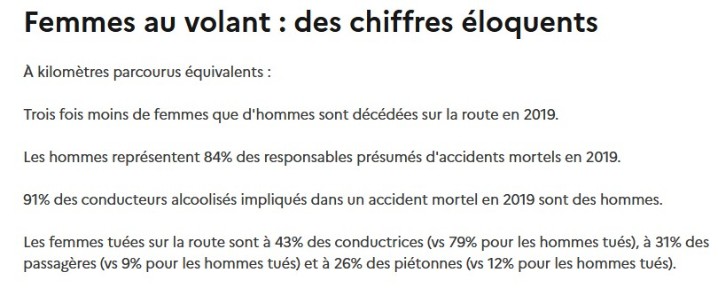
Source : interieur.gouv.fr (Femmes au volant, vie au tournant)Source: interieur.gouv.fr, French Ministry of the Interior road safety campaign (original in French)
Le biais de confirmation !Confirmation bias!
La tendance à privilégier les informations qui confirment ce qu'on pense déjà, et à ignorer ou rejeter celles qui le contredisent.The tendency to favour information that confirms what we already believe, and to ignore or reject anything that contradicts it.
Le piège n'est pas forcément de se faire avoir par une Fake News, mais de considérer comme Fake News une information vraie qui ne nous plaît pas.The trap isn't necessarily falling for fake news: it's dismissing true information we dislike as fake news.
Fake News et réseaux sociauxFake news and social media
Quel est le but d'un réseau social ?What is the purpose of a social network?
LA THUNETHE MONEY
(Mais pas que)(But not only)
L'information en ligneInformation online
Les algorithmes nous montrent ce qu'on a déjà envie de voir (bulle de filtre)… mais nous confrontent aussi aux opinions opposées les plus radicales (polarisation).Algorithms show us what we already want to see (filter bubble)… but also expose us to the most extreme opposing views (polarisation).
À votre avis, quelle conclusion ?What do you think the conclusion is?
Le combo des deux nous enferme dans nos certitudes tout en nous montrant la pire caricature du camp d'en face, ce qui renforce encore la polarisation.The combination of the two locks us into our own certainties while showing us the worst caricature of the opposing side, which reinforces polarisation even further.
On fait quoi ?So what do we do?
1On ralentit : on laisse le système analytique prendre le relais.We slow down: we let the analytical system take over.
2On vérifie la source, avant de vérifier l'info elle-même.We check the source, before checking the information itself.
3On cherche si d'autres sources fiables racontent la même chose.We look for other reliable sources reporting the same thing.
4On se demande si on a bien tout le contexte.We ask ourselves whether we really have the full context.
Que faire ?What should we do?
ContexteContext
Si une information joue trop sur les émotions, redoublons de vigilance !If a piece of information plays too much on emotions, let's stay extra vigilant!
Étude de casCase study
« Le jus de citron pourrait lutter contre le sida »"Lemon juice could fight AIDS"
Une rumeur reprise par de nombreux sites, démontée par Futura-Sciences : aucune étude sérieuse ne soutient cette affirmation. Un titre accrocheur ne fait pas une preuve scientifique.A rumour picked up by many websites, debunked by Futura-Sciences: no serious study supports this claim. A catchy headline is not scientific proof.
Long termeLong term
Pourquoi est-ce que je crois ce que je crois ? À qui est-ce que je fais confiance ?Why do I believe what I believe? Who do I trust?
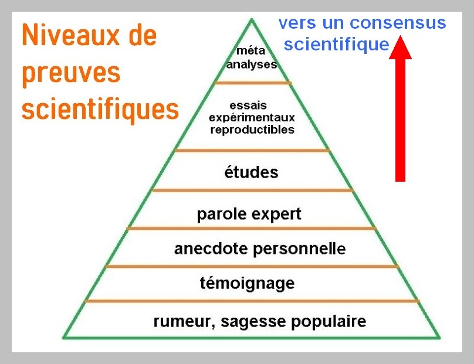
This diagram is in French.
Cours 3
Désinformation : au-delà de la Fake News
Qu'est-ce qu'une Fake News ?What is a fake news story?
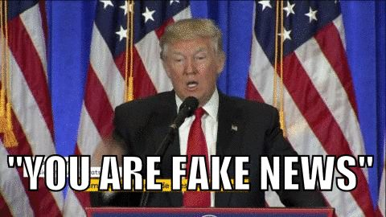
Une information fausse, contraire au réel et aux connaissances que nous en avons, généralement diffusée sur les médias et les réseaux sociaux, dans le but de désinformer.False information, contrary to reality and to our knowledge of it, usually spread across media and social networks with the intent to mislead.
Quels sont les critères pour valider l'information ?What criteria help us validate information?
11
Fiabilité de la sourceReliability of the source
22
Fiabilité de l'interlocuteurReliability of the speaker
33
Niveau de preuvesLevel of evidence
44
Plusieurs sources fiables en parlentSeveral reliable sources report it
55
Crédibilité de l'informationCredibility of the information
66
Commentaires et critiques de l'informationComments and criticism of the information
Mais attention…But be careful…
Critère 1Criterion 1
Fiabilité de la sourceReliability of the source
Critère 2Criterion 2
Fiabilité de l'interlocuteurReliability of the speaker
Critère 3Criterion 3
Niveau de preuvesLevel of evidence
Beaucoup de sources en parlentMany sources report it
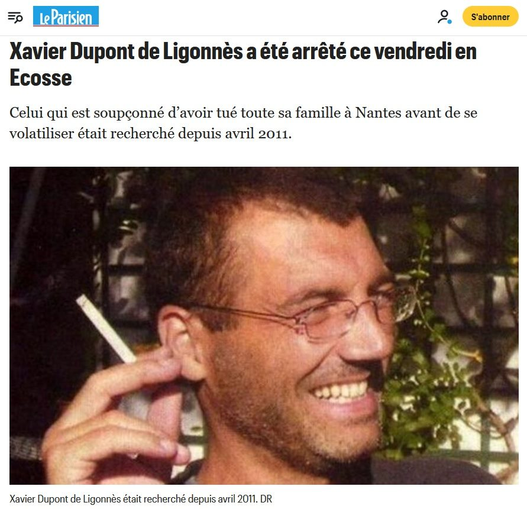
A real case followed by multiple reliable outlets (Le Parisien, BFMTV…)
Crédibilité de l'informationCredibility of the information
Quels sont les retours critiques ?What is the critical feedback?
Limite du conceptA limit of the concept
Quand la satire est prise pour argent comptantWhen satire is taken at face value
Un canular inclus dans le « continuum » Fake News rend le concept flou : est-ce vraiment la même chose qu'une désinformation calculée ?Including a hoax within the "fake news" continuum blurs the concept: is it really the same thing as calculated disinformation?
Le Gorafi (satire assumée)Le Gorafi (openly satirical)
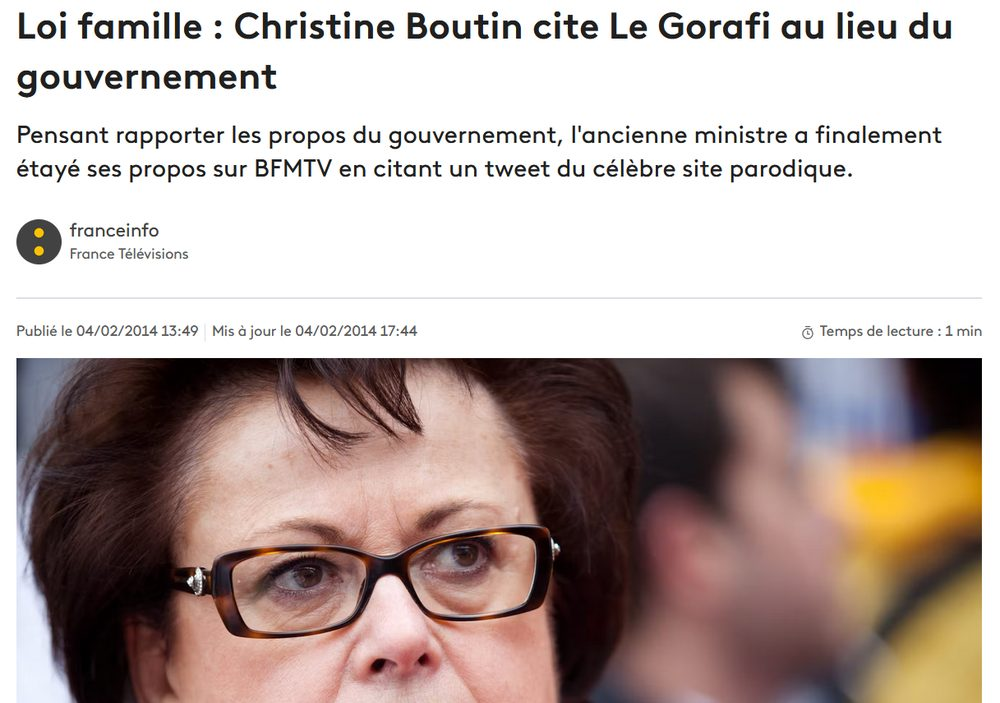
Une ex-ministre cite Le Gorafi comme une vraie déclarationA former minister quotes Le Gorafi as a genuine statement
Anne Hidalgo piégée par un site parodique canadienAnne Hidalgo fooled by a Canadian parody site
Différentes « Fake News »Different kinds of "fake news"
MésinformationMisinformation
Une infox que l'on partage… mais que l'on croit vraie.Fake news we share… while believing it's true.
DésinformationDisinformation
Une infox que l'on partage… en sachant qu'elle est fausse.Fake news we share… while knowing it's false.
« Informations fallacieuses » (misleading news) : beaucoup moins identifiables qu'une Fake News pure et dure, et bien plus partagées, y compris par tous les médias."Misleading news": far less identifiable than outright fake news, and shared much more widely, including by the media themselves.
Un continuum plutôt qu'une frontière netteA continuum rather than a sharp line
Entre une information totalement fausse et une information totalement vraie, il existe tout un dégradé : omission, exagération, mauvais cadrage, vraie info sortie de son contexte…Between wholly false and wholly true information lies a whole gradient: omission, exaggeration, poor framing, true information taken out of context…
Fake NewsFake newsVéritable infoTrue information
↔ Déplacez le curseur sur la barre↔ Drag the marker along the bar
Image à ajouter (curseur à gauche)Image to add (marker on the left)
Texte à ajouter…Text to add…
Image à ajouter (curseur au centre)Image to add (marker in the center)
Texte à ajouter…Text to add…
Image à ajouter (curseur à droite)Image to add (marker on the right)
Texte à ajouter…Text to add…
Conclusion · partie 1Conclusion · part 1
1) Aucune source n'est 100 % fiable.1) No source is 100% reliable.
2) La « Fake News » est un concept flou.2) "Fake news" is a blurry concept.
3) Elle dépend toujours du contexte.3) It always depends on context.
ConclusionConclusion
▸ 1) Aucune source n’est à 100% fiable▸ 1) No source is 100% reliable
▸ 2) La « Fake News » est un concept flou.▸ 2) “Fake news” is a blurry concept.
▸ 3) Elle dépend du contexte.▸ 3) It depends on the context.
Désinformer SANS Fake NewsMisleading WITHOUT fake news
Le biais de cadrageFraming bias
Une même vidéo, deux légendes possiblesThe same video, two possible captions
Interprétation 1Interpretation 1
CliquezClick
« Dans le métro, ce migrant refuse que des blancs rentrent dans le même wagon que lui !! C'est bizarre, on nous a toujours dit que le racisme anti-blancs n'existait pas ! »"On the subway, this migrant refuses to let white people into the same carriage as him!! Weird, we were always told anti-white racism didn't exist!"
Interprétation 2Interpretation 2
CliquezClick
À Lille, un homme frappait sa femme dans le métro. Un passager, témoin de la scène, lui a demandé à plusieurs reprises de cesser. À l'arrêt suivant, le passager a fait sortir l'homme du train pour protéger la femme.In Lille, a man was hitting his wife on the subway. A passenger who witnessed the scene repeatedly asked him to stop. At the next stop, the passenger got the man off the train to protect the woman.
Le même chiffre, retournéThe same figure, flipped
Un tweet, deux versions du même sondageOne tweet, two versions of the same poll
Désinformer SANS fake news, mais en CITANT des fake newsMisleading WITHOUT fake news, but by CITING fake news
Étude de cas : une rumeur vaccinale construite en citant, encore et encore, la même source biaisée.Case study: a vaccine rumour built by citing, again and again, the same biased source.
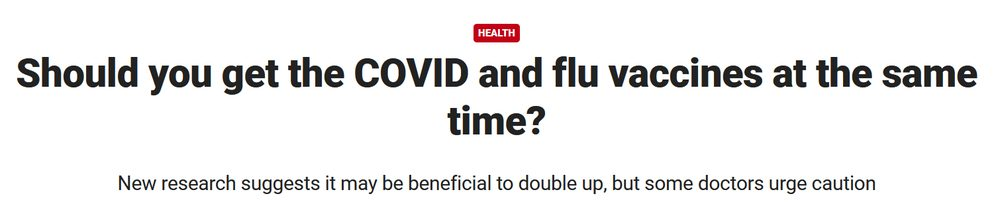
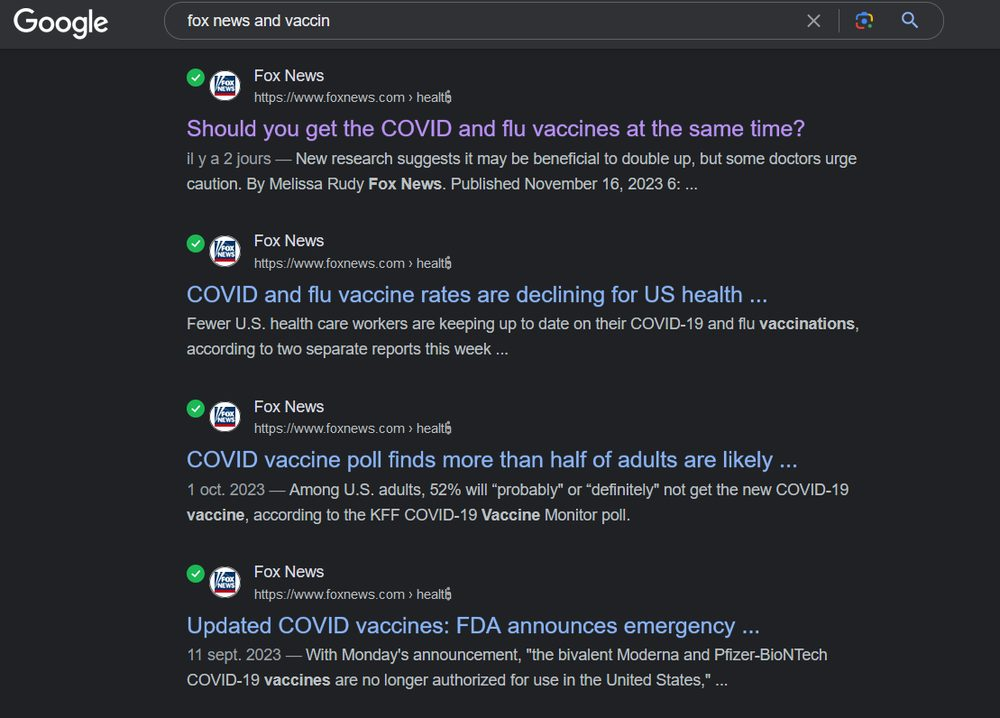
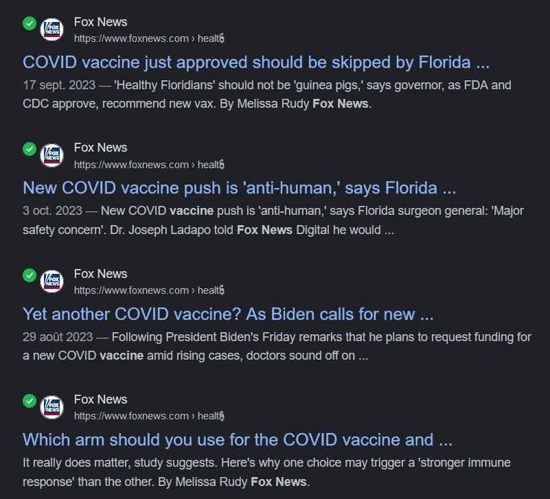
Une même recherche fait remonter plusieurs articles du même média, sur le même sujet, avec des angles alarmistes répétés. L'impression de « plusieurs sources » masque qu'il n'y en a en réalité qu'une seule, citée en boucle.A single search brings up several articles from the same outlet, on the same topic, with repeated alarmist angles. The impression of "several sources" hides the fact there's really only one, quoted on a loop.
Un même média, deux façons d’aligner ses titres
« Devriez-vous recevoir les vaccins contre la COVID et la grippe en même temps ? De nouvelles recherches suggèrent qu’il pourrait être bénéfique de les faire ensemble, mais certains médecins appellent à la prudence. »
Chaque titre pris isolément est défendable. C’est l’empilement qui désinforme.
Les autres manières de désinformerOther ways to mislead
Simuler la foule, simuler l'opinionFaking the crowd, faking opinion
L'AstroturfingAstroturfing
Une technique consistant à simuler un mouvement spontané ou populaire, à des fins politiques ou économiques, pour influencer l'opinion publique.A technique that fakes a spontaneous or grassroots movement, for political or economic ends, to influence public opinion.
« AstroTurf » = la marque de pelouse synthétique utilisée dans les stades, un jeu de mots sur « grassroots movement » (mouvement de la base)."AstroTurf" = the brand of synthetic lawn used in stadiums, a pun on "grassroots movement".
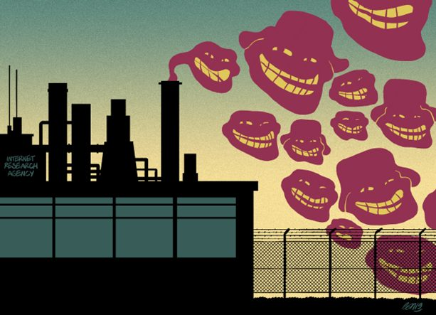
La fabrique du douteThe manufacture of doubt
Une technique à l'origine employée par les industriels (le tabac, en particulier) pour noyer le poisson sur leurs activités, mais elle plaît beaucoup en politique aussi.A technique originally used by industry (tobacco, in particular) to muddy the waters around their activities, but it's also very popular in politics.
InvasionInvasion
Attaque d'un pays souverainAttack on a sovereign country
Premiers à attaquerFirst to attack
Historiquement le même paysHistorically the same country
Légitime défenseSelf-defence
Libération du peupleLiberation of the people
↻Ça se répèteIt repeats
Image/texte à ajouter : InvasionImage/text to add: Invasion
Image/texte à ajouter : Attaque d'un pays souverainImage/text to add: Attack on a sovereign country
Image/texte à ajouter : Premiers à attaquerImage/text to add: First to attack
Image/texte à ajouter : Historiquement le même paysImage/text to add: Historically the same country
Image/texte à ajouter : Légitime défenseImage/text to add: Self-defence
Image/texte à ajouter : Libération du peupleImage/text to add: Liberation of the people
Chaque reformulation successive est un « contre-narratif », pas un mensonge nouveau, juste un mot différent pour le même événement.Each successive reframing is a "counter-narrative", not a new lie, just a different word for the same event.
La Mute NewsMute News
Ne PAS parler de certaines informations, ou PEU en parler.NOT talking about certain information, or barely talking about it.
L’usage politique de la désinformation
Étude de cas · étape 1Case study · step 1
Les étoiles de David taguées à ParisThe Stars of David tagged in Paris
Étape 2 · les premiers titresStep 2 · the first headlines
Étape 3 · le doute s'installeStep 3 · doubt sets in
Étape 4 · la conclusion de l'enquêteStep 4 · the investigation's conclusion
L'enquête a conclu à une opération de déstabilisation pilotée par le FSB russe, ni un simple acte antisémite isolé, ni un pur canular : une vraie opération de désinformation, en plusieurs actes.The investigation concluded it was a destabilisation operation run by the Russian FSB, neither a simple isolated antisemitic act nor a pure hoax: a real disinformation operation, in several acts.
Le cycle de la polarisationThe polarisation cycle
Le même engrenage se répète, quel que soit l'élément déclencheur (attaque terroriste, incident impliquant des agents étrangers, manifestations nationales…).The same mechanism repeats, whatever the trigger (a terrorist attack, an incident involving foreign agents, national protests…).
Incident déclencheurTriggering incident
→
Politiciens et médias réagissentPoliticians and media react
→
Les réseaux sociaux s'emballentSocial media goes into overdrive
→
Les fermes de troll amplifientTroll farms amplify it
→
Propos radicaux et polarisants renforcésRadical, polarising rhetoric reinforced
→
La société devient plus diviséeSociety becomes more divided
Le même cycle, quel que soit le déclencheur
Des agents étrangers provoquent un incident… ou bien une attaque terroriste, ou bien des manifestations nationales.
Politiciens et médias réagissent.
Les médias sociaux réagissent, et amplifient les propos les plus radicaux.
Les fermes de trolls augmentent le phénomène.
La société devient davantage divisée.
L'usage politique de la désinformationThe political use of disinformation
Quand deux États s'accusent mutuellementWhen two states accuse each other
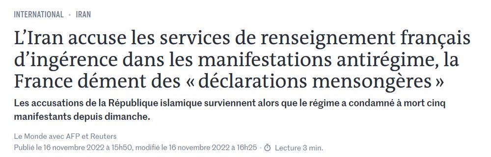
Complot ou pas ?Conspiracy or not?
Les théories du complot comme argument rhétoriqueConspiracy theories as a rhetorical device
Théorie du complotConspiracy theory
Le « milliard d'or »The "golden billion"
Théorie d'origine russe imaginant que les Occidentaux veulent accaparer toute la richesse mondiale pour eux seuls. Il y a un fond de vrai (les ressources mondiales sont limitées), mais extrapolé jusqu'à imaginer une intention consciente d'asservir le reste du monde.A theory of Russian origin imagining that the West wants to hoard all the world's wealth for itself. There's a grain of truth in it (global resources are limited), but stretched into imagining a conscious intent to enslave the rest of the world.
Le « milliard d’or », en détail
Théorie du complot d’origine russe, née en 1990 : les Occidentaux voudraient accaparer l’ensemble de la richesse du globe au profit d’un seul milliard d’individus.
Comme souvent, il y a un fond de vrai : si le monde entier vivait comme les Occidentaux, il n’y aurait plus assez de ressources.
Mais cela est extrapolé jusqu’à imaginer une intention consciente d’asservir ou d’éliminer le reste de la population.
fr.wikipedia.org/wiki/Golden_billion ; francetvinfo.fr, Vrai ou Fake : y a-t-il un « milliard d’or » ?
Conséquence de cette idéologie en AfriqueA consequence of this ideology in Africa
La propagande russe ciblant l'Afrique francophoneRussian propaganda targeting French-speaking Africa
TV5 Monde · Journal AfriqueAfrica News
Dessin animé de propagandePropaganda cartoon
L'impact de l'information, même vraieThe impact of information, even when true
L'exposition à des nouvelles angoissantes accroît le temps passé devant les informations, et les personnes les plus exposées montrent des symptômes d'anxiété plus importants.Exposure to distressing news increases the time spent consuming news, and the most exposed people show greater anxiety symptoms.
Limites : même une information exacte, consommée en excès, peut nuire.Limits: even accurate information, consumed in excess, can be harmful.
Cours 4
La rhétorique au service du complotisme
DéfinitionDefinition
La rhétoriqueRhetoric
L'art de persuader, convaincre ou impressionner un public en utilisant les mots de manière efficace.The art of persuading, convincing, or impressing an audience by using words effectively.
C'est donc une histoire d'influence.So it's really a matter of influence.
Êtes-vous influençable ?Are you easily influenced?
Nous sommes des créatures sociales, et donc très influençables. Deux exemples pour s'en convaincre.We are social creatures, and therefore highly susceptible to influence. Two examples to prove it.
L’influence sociale, ce n’est ni bien ni mal
L’influence sociale est un aspect fondamental de l’humanité.
Ce n’est pas bien ou mal, c’est comme ça.
La rhétorique est un moyen de convaincre par différents procédés : en avoir conscience permet de l’utiliser correctement, et de ne pas se faire avoir.
La rhétorique est donc liée à l’esprit critique : connaître les méthodes rhétoriques permet d’être plus vigilant.
Expérience classiqueA classic experiment
L'expérience d'AschAsch's experiment
Face à un groupe qui répond faux à l'unanimité, une personne sur trois se rallie à la mauvaise réponse, juste pour éviter le désaccord.Faced with a group that unanimously gives a wrong answer, one person in three goes along with the wrong answer too, just to avoid disagreement.
Une rhétorique nécessite…Rhetoric requires…
Un orateur, un interlocuteur, un auditoire et un langage.A speaker, a listener, an audience, and a language.
Elle est structurée autour d'une triple dimension : ethos, pathos, logos.It is structured around a triple dimension: ethos, pathos, logos.
Mots clésKey words
Cliquez sur chaque rôle.Click each role.
OrateurSpeaker
Personne qui tente de convaincre.The person trying to convince.
AuditoireAudience
Personne que l'on cherche à convaincre.The people you're trying to convince.
InterlocuteurInterlocutor
Personne à qui s'adresse l'orateur.The person the speaker is directly addressing.
Auditoire et interlocuteur ne sont pas forcément les mêmes personnes.The audience and the interlocutor aren't necessarily the same people.
1 des 4 manières de débattre1 of 4 ways to debate
MonologueMonologue
L'orateur cherche à convaincre un auditoire, mais l'auditoire ne peut pas lui répondre ou contre-argumenter.The speaker tries to convince an audience, but the audience cannot respond or counter-argue.
OrateurSpeaker
convainc →convinces →
Auditoire = InterlocuteurAudience = Interlocutor
Exemple : un discours politique.Example: a political speech.
2 des 4 manières de débattre2 of 4 ways to debate
DélibérationDeliberation
On argumente pour convaincre l'interlocuteur, mais on peut aussi se laisser convaincre. L'idée est de parvenir à un consensus.We argue to convince the other person, but we can also let ourselves be convinced. The goal is to reach a consensus.
Personne APerson A
⇄ s'influencent⇄ influence each other
Personne BPerson B
Exemple : un couple cherche à décider quoi faire ce soir.Example: a couple deciding what to do tonight.
3 des 4 manières de débattre3 of 4 ways to debate
CompétitionCompetition
Le but n'est pas de convaincre l'interlocuteur (l'adversaire) mais le public.The goal isn't to convince the other party (the opponent) but the audience.
Camp ASide A
rivalitérivalry
Camp BSide B
Auditoire : c'est lui qu'on cherche vraiment à convaincreAudience: the one you're really trying to convince
Exemple : un débat politique télévisé.Example: a televised political debate.
4 des 4 manières de débattre4 of 4 ways to debate
ConflitConflict
Le but n'est ni de convaincre l'interlocuteur, ni le public : c'est juste le « plaisir » de la joute verbale.The goal is neither to convince the other person nor the audience: it's just the "pleasure" of verbal sparring.
VousYou
joute verbaleverbal sparring
Beau-frèreBrother-in-law
Exemple : fin de repas de famille, débat avec ton beau-frère aux idées radicalement différentes des tiennes…Example: end of a family dinner, arguing with your brother-in-law whose views are radically different from yours…
Quelques exemplesA few examples
Monologue, délibération, compétition ou conflit ? Cliquez sur chaque situation.Monologue, deliberation, competition, or conflict? Click each situation.
Tu cherches à obtenir une réduction sur le prix de ce magnifique tapis.You're trying to negotiate a discount on this magnificent rug.
DélibérationDeliberation
Vous négociez à deux : chacun peut infléchir l'autre, l'objectif est un accord sur le prix. C'est une délibération.The two of you negotiate: each can sway the other, the goal is agreement on a price. That's a deliberation.
Même situation… mais tu es avec tes amis, qui te chambrent souvent en disant que tu ne sais pas négocier.Same situation… but you're with your friends, who often tease you for being bad at negotiating.
CompétitionCompetition
Le vrai public, ce sont vos amis : vous ne cherchez plus vraiment à convaincre le vendeur, mais à leur prouver quelque chose.The real audience is your friends: you're no longer really trying to convince the seller, but to prove something to them.
L'avocat et le procureur affichent leurs désaccords sur la culpabilité du prévenu.The defence lawyer and the prosecutor argue over the defendant's guilt.
CompétitionCompetition
Ils ne cherchent pas à se convaincre l'un l'autre, mais à convaincre le juge ou le jury, le vrai public du procès.They aren't trying to convince each other, but to convince the judge or jury, the trial's real audience.
L'avocat fait sa plaidoirie.The lawyer delivers their closing argument.
MonologueMonologue
Un discours ininterrompu, comme un discours politique : personne ne peut contre-argumenter en direct.An uninterrupted speech, like a political address: no one can counter-argue live.
Pour qui est-ce que je débats ?Who am I debating for?
Même situation de départ, deux stratégies différentes.Same starting situation, two different strategies.
Endogroupe : mon campIn-group: my side
Convaincre / galvaniser les gens qui pensent déjà comme moi.Convince / rally people who already think like me.
Exogroupe : l'autre campOut-group: the other side
Convaincre les gens qui pensent différemment.Convince people who think differently.
Stratégie « exogroupe »"Out-group" strategy
« Féministe, j'interpelle un propos machiste sur Twitter et tente d'argumenter avec l'auteur pour lui faire comprendre le sexisme de ses propos. »"As a feminist, I call out a sexist comment on Twitter and try to reason with its author to help them see the sexism in what they said."
Stratégie « endogroupe »"In-group" strategy
« Féministe, j'interpelle un propos machiste sur Twitter et montre avec véhémence à son auteur que ses propos sont inadmissibles. »"As a feminist, I call out a sexist comment on Twitter and forcefully show its author that what they said is unacceptable."
Il n'y a pas de bonne ou de mauvaise stratégie : c'est un choix rhétorique et stratégique. En avoir conscience aide à comprendre ce qui se joue vraiment dans un débat.There's no right or wrong strategy: it's a rhetorical and strategic choice. Being aware of it helps you understand what's really at stake in a debate.
Endogroupe ou exogroupe ?
« Féministe, j’interpelle un propos machiste sur Twitter et tente d’argumenter avec l’auteur pour lui faire comprendre le sexisme de ses propos. »
« Féministe, j’interpelle un propos machiste sur Twitter et montre avec véhémence à son auteur que ses propos sont inadmissibles. »
Même sujet, même adversaire : mais dans le second cas, je parle à mon propre camp.
3 manières de faire de la rhétorique3 ways to do rhetoric
Cliquez sur chaque carte.Click each card.
Ethos
Convaincre par rapport à l'éthique.Convincing through ethics.
CliquezClick
La crédibilité, la réputation ou les valeurs de l'orateur.The speaker's credibility, reputation, or values.
Pathos
Convaincre grâce à l'émotion.Convincing through emotion.
CliquezClick
On touche l'empathie, la peur, l'indignation…It taps into empathy, fear, outrage…
Logos
Convaincre grâce à la logique.Convincing through logic.
Deux manières de faire de l'ethosTwo ways to do ethos
L'éthique « universelle »"Universal" ethics
Invoquer de grandes valeurs : la justice, la liberté, la solidarité…Invoking grand values: justice, freedom, solidarity…
L'éthique contextuelleContextual ethics
Se baser sur son propre statut, sa réputation, sa situation.Relying on one's own status, reputation, or situation.
« Il est scandaleux que dans le pays des Lumières, des gens dorment encore dehors. » « Le clonage, c'est mauvais, car c'est jouer à Dieu. »"It's a scandal that in the land of the Enlightenment, people still sleep outside." "Cloning is wrong, because it's playing God."
Ethos contextuelContextual ethos
Se baser sur le contexte pour donner du poids à sa positionUsing context to give weight to a position
Vladimir Poutine
Affirme n'avoir qu'un petit appartement, un garage et 3 voitures, pour paraître proche du peuple. Son patrimoine réel est très largement contesté par les enquêtes journalistiques.Claims to own only a small flat, a garage, and 3 cars, to appear close to ordinary people. His actual wealth is heavily disputed by journalistic investigations.
Donald Trump
Explique avoir renoncé à son salaire de président, ce qui est vrai et vérifiable. Éthiquement, l'argument se défend.States he waived his presidential salary, which is true and verifiable. Ethically, the argument holds up.
Même procédé rhétorique, deux niveaux de véracité très différents : d'où l'importance de vérifier avant de se laisser convaincre par le personnage plutôt que par les faits.Same rhetorical device, two very different levels of truthfulness, which is why it matters to check facts before letting yourself be convinced by the persona rather than the facts.
L'éthos, un moyen puissant de délégitimer un argumentaireEthos, a powerful way to delegitimise an argument
Harrison Ford tient un discours sur l'urgence climatique sur France 2… avant de repartir dans son jet privé.Harrison Ford gives a speech about the climate emergency on French TV… before flying off in his private jet.
« Faites ce que je dis, pas ce que je fais »"Do as I say, not as I do"
La seule chose qu'on retient de son intervention, c'est cette hypocrisie, pas le fond de son propos sur le climat. Attaquer la personne plutôt que l'argument est très efficace… mais ce n'est pas toujours pertinent sur le fond. C'est ce qu'on appelle un argument ad hominem.The only thing people remember from his speech is this hypocrisy, not the substance of what he said about climate. Attacking the person rather than the argument is very effective… but it's not always relevant to the substance. This is what's called an ad hominem argument.
Chercher à convaincre par l'émotion, l'empathieTrying to convince through emotion, empathy
Très utilisé en politique (discours de Sarah Palin, États-Unis) comme sur les réseaux sociaux, pour galvaniser ou engranger des likes et des dons.Widely used in politics (Sarah Palin's speeches, US) as well as on social media, to rally supporters or rack up likes and donations.
Le pouvoir de l'IA sur FacebookThe power of AI on Facebook
Le pathos, en images
Logos
Le syllogismeThe syllogism
Tous les hommes sont mortels. Socrate est un homme. DONC Socrate est mortel.All men are mortal. Socrates is a man. THEREFORE Socrates is mortal.
Tous les hommes sont mortels. La reine Margot est mortelle. DONC la reine Margot est un homme.All men are mortal. Queen Margot is mortal. THEREFORE Queen Margot is a man.
Même structure « logique », mais c'est un sophisme : la forme ressemble à un syllogisme valide, le fond ne l'est pas.Same "logical" structure, but it's a fallacy: the form looks like a valid syllogism, the substance isn't.
Une personne qui s'endort tout habillée, chaussures comprises, a souvent trop bu la veille, ce qui explique aussi le mal de tête. Les chaussures ne causent rien : les deux ont une cause commune.Someone who falls asleep fully dressed, shoes included, has often had too much to drink the night before, which also explains the headache. The shoes cause nothing: both share a common cause.
ConcomitanceCoincidence
Plus Nicolas Cage sort de films, plus il y a de morts dans les piscines aux États-Unis.The more films Nicolas Cage releases, the more people drown in swimming pools in the US.
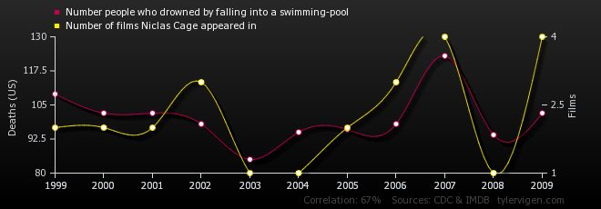
Une coïncidence statistique amusante… mais aucun lien de cause à effet.An amusing statistical coincidence… but no cause-and-effect link.
CorrélationCorrelation
Plus on consomme de produits transformés, plus il y a de cancers.The more processed food we eat, the more cancer cases there are.
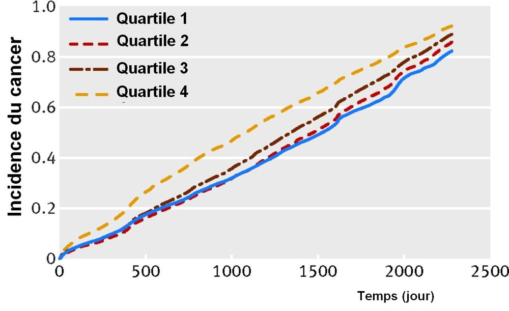
Source : étude Nutrinet-Santé, un lien statistique réel, mais qui ne prouve pas à lui seul la causalité.Source: the Nutrinet-Santé study, a real statistical link, but one that alone doesn't prove causation.
Étude de casCase study
Le chocolat aide-t-il à décrocher un prix Nobel ?Does chocolate help you win a Nobel Prize?
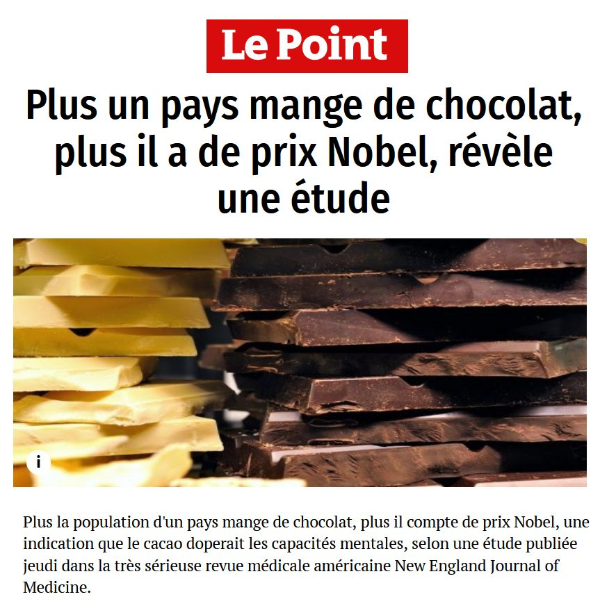
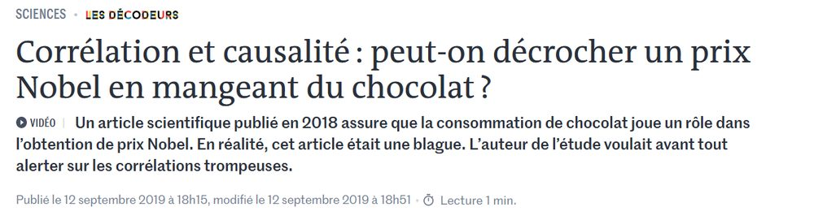
En mettant simplement deux courbes côte à côte, sans jamais affirmer de causalité, on peut quand même laisser le lien se former dans l'esprit du lecteur. Est-ce alors une Fake News… ou juste une présentation trompeuse ?By simply putting two curves side by side, without ever claiming causation, you can still let the link form in the reader's mind. Is that fake news… or just a misleading presentation?
Étude de cas : le biais de causalitéCase study: the causality bias
Un adolescent meurt après une vaccination contre le papillomavirusA teenager dies after an HPV vaccination
« Le produit vaccinal ne serait pas en cause. »"The vaccine itself does not appear to be at fault."Agence Régionale de Santé, conclusion de l'enquêteRegional Health Agency, investigation conclusion
Deux évènements rapprochés dans le temps (concomitance) ont été lus comme une causalité, avant même la fin de l'enquête. C'est le biais de causalité : notre cerveau cherche toujours une explication, quitte à en inventer une trop vite.Two events close together in time (coincidence) were read as causation, even before the investigation ended. This is the causality bias: our brain always looks for an explanation, even if it means inventing one too fast.
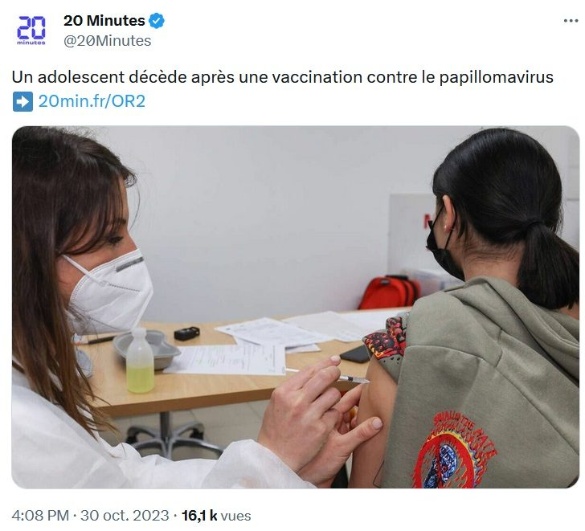
Concernant les théories du complot
Des liens de causalité sont établis entre différents éléments, ce qui entraîne une pensée complotiste, là où il n’y a peut-être que coïncidence ou corrélation.
« Comme par hasard. »
Par exemple : les vaccins et l’autisme.
Autre exemple : la volonté d’adhésion de l’Ukraine à l’OTAN et l’attaque russe.
Le piège des moyennesThe trap of averages
« Les ménages français détiennent en moyenne un patrimoine net de 446 000 € »"French households hold an average net worth of €446,000"
« C'est bien la preuve que la plupart des Français sont riches ! »"That's proof most French people are rich!"
Une moyenne peut être tirée vers le haut par une minorité très riche. Elle ne dit rien de la situation du Français « typique » : c'est la médiane qu'il faudrait regarder pour ça, et elle est bien plus basse.An average can be pulled upward by a very wealthy minority. It says nothing about the "typical" French person's situation: you'd need to look at the median for that, and it's much lower.
SophismeFallacy
Le biais d'autoritéAppeal to authority
Considérer qu'une personne qui a de l'autorité a forcément raison.Assuming that a person with authority must be right.
« Je suis le scientifique le plus cité au monde ! »"I'm the most cited scientist in the world!"
Être très cité, très diplômé ou très suivi ne rend pas une affirmation vraie : l'autorité ne remplace jamais la preuve. (Voir aussi le schéma de l'expérience de Milgram sur l'obéissance à l'autorité.)Being highly cited, highly qualified, or widely followed doesn't make a claim true: authority never replaces evidence. (See also Milgram's experiment on obedience to authority.)
« Mon voisin est un idiot, et il a des moustaches. Donc tous les moustachus sont des idiots. »"My neighbour is an idiot, and he has a moustache. So all men with moustaches are idiots."
Généraliser à partir d'un seul cas (ou d'un tout petit nombre) à l'ensemble d'un groupe.Generalising from a single case (or a tiny number) to an entire group.
SophismeFallacy
Le déshonneur par associationGuilt by association
« Vous êtes végétariens ? Vous savez qui d'autre était végétarien ? »"You're vegetarian? You know who else was vegetarian?"
Hitler ! Associer une idée à une personne détestable ne prouve rien sur la valeur de cette idée : c'est un raccourci rhétorique bien connu, popularisé sous le nom de « loi de Godwin ».Hitler! Linking an idea to a hated person proves nothing about the idea's worth: it's a well-known rhetorical shortcut, popularised as "Godwin's law".
SophismeFallacy
Le « vrai » écossaisThe "true" Scotsman
« Tous les Écossais sont roux ! - Non, mon voisin est écossais, et il a les cheveux blonds. - Alors ce n'est pas un vrai écossais ! »"All Scotsmen have red hair! - No, my neighbour is Scottish, and he has blond hair. - Then he's not a true Scotsman!"
Plutôt que d'admettre l'exception, on redéfinit la règle pour qu'elle reste vraie « par définition ».Rather than admit the exception, the rule gets redefined so it stays true "by definition".
SophismeFallacy
Le biais de la popularitéPopularity bias
Un champion adoré du public vend… des voitures. Ce n'est pas son expertise automobile qui convainc, c'est la sympathie qu'il inspire.A champion beloved by the public sells… cars. It's not his automotive expertise that convinces us, it's the likeability he inspires.
Considérer qu'une chose est bonne parce qu'elle est ancienne.Assuming that something is good because it's old.
« Ma boulangerie existe depuis 1659, elle est donc forcément bonne ! » « Cette technique de soin est utilisée depuis l'Antiquité ! »"My bakery has existed since 1659, so it must be good!" "This treatment has been used since Antiquity!"
SophismeFallacy
Appel à la nouveautéAppeal to novelty
Considérer qu'une chose est forcément meilleure parce qu'elle est nouvelle : le symétrique exact de l'appel à l'ancienneté.Assuming something is necessarily better because it's new: the exact mirror of the appeal to tradition.
Appel à l’exotisme
Considérer que si quelque chose vient d’un lointain pays, c’est forcément bien.
Exemple du PowerPoint : « Les secrets sacrés de l’Inde appliqués au monde occidental ».
SophismeFallacy
L'appel à la natureAppeal to nature
Considérer que si quelque chose est naturel, c'est forcément bon.Assuming that if something is natural, it must be good.
« Tu devrais goûter ce champignon, il est délicieux et 100 % naturel ! »"You should try this mushroom, it's delicious and 100% natural!"
Les champignons les plus toxiques sont, eux aussi, parfaitement naturels.The most toxic mushrooms are also perfectly natural.
SophismeFallacy
La pente savonneuseThe slippery slope
Considérer qu'un évènement entraînera forcément des conséquences bien plus graves par la suite.Assuming that one event will necessarily lead to much more serious consequences down the line.
« Si nous masquons les paquets de cigarettes, demain on nous demandera de masquer nos bouteilles de vin ! Et ce sera la fin de notre terroir ! »"If we hide cigarette packs today, tomorrow they'll ask us to hide our wine bottles! And that'll be the end of our heritage!"
Considérer que les choses « évidentes » sont forcément vraies.Assuming that "obvious" things must be true.
« La Terre est plate, c'est évident ! »"The Earth is flat, it's obvious!"
SophismeFallacy
Le sophisme du pire ailleursThe "worse elsewhere" fallacy
Expliquer qu'il existe des situations plus graves ailleurs, pour justifier ou minimiser une situation présente.Pointing to worse situations elsewhere, to justify or minimise a present one.
« Pourquoi défendre le droit des femmes en France ? Allez donc en Afghanistan ! »"Why defend women's rights in France? Go to Afghanistan instead!"
SophismeFallacy
Le faux dilemmeThe false dilemma
Ne présenter que deux options, alors que d'autres sont tout aussi possibles.Presenting only two options, when other possibilities exist just as well.
« Si vous êtes CONTRE cette loi, vous êtes POUR les assassins d'enfants ! »"If you're AGAINST this law, you're FOR child murderers!"
Le faux dilemme, dans la vraie vieThe false dilemma, in real life
Un exemple observé sur les réseaux sociaux américainsAn example observed on American social media
Réduire tout un débat politique à deux camps opposés (ici « l'Amérique » contre « le communisme ») est un faux dilemme classique, quel que soit le bord politique qui l'utilise.Reducing an entire political debate to two opposing camps (here "America" versus "communism") is a classic false dilemma, whichever political side uses it.
SophismeFallacy
Le sophisme du juste milieuThe middle ground fallacy
Considérer que la solution intermédiaire est toujours la plus juste.Assuming the middle-ground solution is always the fairest one.
Maintien de l'esclavage, ou abolition totale de l'esclavage ? Le « compromis » entre les deux n'est pas plus juste que l'une des deux positions.Keep slavery, or abolish it entirely? The "compromise" between the two is no fairer than either position.
Quiz : repérez le sophismeQuiz: spot the fallacy
Cliquez sur chaque carte pour découvrir la réponse.Click each card to reveal the answer.
« Cette technique de soin est utilisée depuis l'Antiquité, elle doit forcément être efficace. »"This treatment has been used since Antiquity, so it must be effective."
Appel à l'anciennetéAppeal to tradition
L'ancienneté d'une pratique ne dit rien de son efficacité réelle.How old a practice is says nothing about how effective it actually is.
« Si on commence à réguler ce produit, demain on interdira tout, et après-demain on nous enlèvera nos libertés ! »"If we start regulating this product, tomorrow they'll ban everything, and the day after they'll take away our freedoms!"
Pente savonneuseSlippery slope
Une chaîne de conséquences de plus en plus graves, présentée comme inévitable sans le démontrer.A chain of increasingly serious consequences, presented as inevitable without proving it.
« Tu es contre cette loi ? Donc tu es pour les criminels ! »"You're against this law? So you're for criminals!"
Faux dilemmeFalse dilemma
Seulement deux options sont présentées, alors que d'autres positions nuancées existent.Only two options are presented, when other nuanced positions exist.
« Mon adversaire veut réguler un peu les banques : il veut donc détruire le capitalisme ! »"My opponent wants some bank regulation: so he wants to destroy capitalism!"
Homme de pailleStraw man
On déforme la position réelle de l'adversaire pour la rendre plus facile à attaquer.The opponent's real position is distorted to make it easier to attack.
« Personne n'a prouvé que les extraterrestres n'existent pas, donc ils existent. »"No one has proven aliens don't exist, so they exist."
Appel à l'ignoranceAppeal to ignorance
L'absence de preuve du contraire n'est pas une preuve.Absence of evidence to the contrary is not evidence.
« Ce produit est 100 % naturel, donc il ne peut pas être dangereux. »"This product is 100% natural, so it can't be dangerous."
Appel à la natureAppeal to nature
Naturel ne veut pas dire inoffensif : de nombreux poisons sont parfaitement naturels.Natural doesn't mean harmless: plenty of poisons are perfectly natural.
« Un million de personnes ne peuvent pas se tromper ! »"A million people can't be wrong!"
Appel à la popularitéAppeal to popularity
Le nombre de personnes qui croient une chose ne la rend pas vraie pour autant.The number of people who believe something doesn't make it true.
« Trouvons un compromis : gardons l'esclavage un jour sur deux. »"Let's find a compromise: keep slavery every other day."
Sophisme du juste milieuMiddle ground fallacy
Le compromis entre une position juste et une position injuste n'est pas automatiquement le plus juste.The compromise between a just position and an unjust one isn't automatically the fairest.
Quel sophisme reconnaissez-vous ?
Effet David contre Goliath.
Et ici ?
Appel à la popularité.
Et là ?
Appel à l’ancienneté.
Et pour finir ?
Témoignage personnel.
Cours 5
Complotisme et politique
Comment les théories du complot sont-elles reliées à la politique ?
Trois manières principales.
La théorie du complot implique des politiques.
La pensée complotiste corrèle avec des valeurs politiques.
Les politiques utilisent le complot comme stratégie rhétorique.
La théorie du complot impliquant des politiques
Théories du complot impliquant des actions politiques
Generic Conspiracy Scale (Brotherton et al., 2013)
Il n’y a pas qu’une catégorie de théories du complot
« Le gouvernement autorise ou perpètre des actes de terrorisme sur son propre sol, en dissimulant son implication. »
« Un petit groupe secret de personnes est responsable de toutes les grandes décisions mondiales, comme celle d’aller en guerre. »
« Des preuves de contact extraterrestre sont dissimulées au public. »
« Des technologies dotées de capacités de contrôle mental sont utilisées sur des personnes à leur insu. »
« Des groupes de scientifiques manipulent, fabriquent ou suppriment des preuves afin de tromper le public. »
Six catégories
Malversation gouvernementale.
Malveillance globale.
Dissimulation extraterrestre.
Bien-être personnel.
Contrôle de l’information.
Complot des minorités, par exemple « le grand remplacement ».
Les politiciens sont partout !
(complot ?)
Pourquoi ?
La pensée complotiste corrèle avec des valeurs politiques
Une courbe en U : le complotisme est plus fort aux deux extrémités de l’axe gauche-droite qu’au centre.
Extrême gauche, centre, extrême droite.
Pourquoi ?
Un positionnement « hors système ».
« Conspiracy theories are for losers » : on adhère davantage quand on perd.
Un plus grand rejet du statu quo.
Conspiracy mentality and political orientation across 26 countries
Le complotisme et la politique
https://doi.org/10.1038/s41562-021-01258-7
Sauf que…
Il faut distinguer les théories du complot génériques…
…des théories du complot contextuelles.
Les deux ne réagissent pas aux mêmes variables.
Cinq affirmations, deux camps
« Kamala Harris est un homme. »
« Trump est contrôlé par la Russie. »
« Les élections américaines de 2020 ont été truquées. »
« Barack Obama n’est pas né aux États-Unis. »
« Trump n’a pas vraiment eu le COVID. »
Le biais partisan
Le camp auquel j’appartiens décide de quelles théories du complot je suis prêt à entendre.
Un même évènement, deux complots
« C’est un coup des Démocrates pour tuer Trump. »
« C’est un coup des Républicains pour faire de Trump un martyr. »
Le lien entre croyances complotistes et valeurs politiques
Freeden, 2001
Idéologie politique
« Ensemble d’idées, de croyances, de valeurs et d’opinions, présentant un schéma récurrent, qui rivalise délibérément ainsi qu’involontairement pour proposer des plans d’action dans l’élaboration des politiques publiques, dans le but de justifier, expliquer, contester ou changer les arrangements et processus sociaux et politiques d’une communauté politique. »
Attitude caractérisée par une considération positive du passé ou du statu quo (principes et procédures établis), et parfois, mais pas nécessairement, par une méfiance envers le changement.
Définition
Autoritarisme
Prééminence, hypertrophie de l’autorité, érigée en valeur suprême. Un régime politique autoritaire cherche, par divers moyens (propagande, encadrement de la population, répression), la soumission et l’obéissance de la société.
Définition
Anomie
Un sentiment d’aliénation et de désespoir dans une société ou un groupe.
Définition
Orientation de dominance sociale (SDO)
Une tendance dispositionnelle à accepter, voire à préférer, des circonstances qui maintiennent les inégalités sociales, combinée à une préférence générale pour les structures sociales hiérarchiques.
Définition
Populisme
Toute approche politique qui a tendance à opposer le peuple aux élites politiques, économiques, médiatiques, culturelles ou intellectuelles, en se réclamant du premier.
Analyse factorielle
Mes résultats
Le plan de l’étude
Variables dépendantes : malversation gouvernementale, complot des minorités.
Le chiffrage de la BBC et celui du Trésor français convergent : le coût est réel, et il n’a rien de secret.
bbc.com/news/business-64450882
Le paradoxe
Certains politiciens fragilisent la société via le complotisme.
Ces modifications sociétales renforcent le complotisme.
Ce complotisme risque de profiter à ces politiciens.
Une boucle
Politiciens →
Instabilité politique →
Citoyens →
et retour aux politiciens.
Comment s’en sortir ?
À l’échelle individuelle : renforcer l’esprit critique, développer la réflexion.
À l’échelle sociale : jouer sur les facteurs qui impactent la société : chercher une meilleure stabilité politique, augmenter la confiance envers les institutions.
Merci !Thank you!
Après la séanceAfter the session
Le bilan, les jeux, et votre retourSummary, games, and your feedback
Scannez ce QR code : vous pourrez donner votre retour, revoir le bilan de la formation ou rejouer aux jeux.Scan this QR code: you can leave your feedback, review the session summary, or play the games again.


![QR code vers la page antoninatger.github.io/interventions/retours]() antoninatger.github.io/interventions/retours →antoninatger.github.io/interventions/retours →
antoninatger.github.io/interventions/retours →antoninatger.github.io/interventions/retours →
Martine 🌻 @martine_lili · 1 h
Honteux !!! Mettre un monsieur de 82 ans à la rue… Ces belles-filles sont des p*******s sans cœur 🤬
Kévin @kev_du_94 · 1 h
Bande de s*****s. J'espère qu'elles vont tout perdre elles aussi
Sandrine B. @sandrine_b · 58 min
Le pauvre… 😢 Il a travaillé toute sa vie pour cette maison et ces deux c*******s le jettent dehors
Le Vrai Gaulois @vraigaulois · 55 min
Voilà la famille aujourd'hui. Plus aucun respect pour les anciens. Des o*****s, rien d'autre.
Juju @juju_off · 52 min
Moi à sa place je les déshérite direct ces m*****s 😤
Nathalie G. @nath_g62 · 50 min
Je pleure en voyant ça. Comment on peut faire ça à son beau-père ?? Elles n'ont aucune honte
Dédé du 13 @dede13 · 47 min
Qu'elles viennent me dire ça en face, les p*****s 👊
Sophie @sophie_75 · 44 min
Partagez un max !!! Il faut que tout le monde sache ce que ces v*******s ont fait 🔁
Thomas @thomas_lit · 41 min
Attendez, en fait, on n'a pas tous les éléments… Lisez ça avant de vous énerver 👇
francelive.fr/paul-82-ans-la-verite
Gégé @gerard_retraite · 39 min
Courage Paul ❤️ Et honte à ces deux c*******s, le karma va les rattraper
Lucas @lucas_33 · 35 min
Elles mériteraient d'être expulsées à leur tour, on verra si elles rigolent 😡
Karine 🐾 @karine_animo · 31 min
Dégoûtée de l'humanité. L'argent, toujours l'argent. Des r******s, ces bonnes femmes.
MaxPower @maxpower_off · 28 min
Quelqu'un a leurs noms ? Faut les afficher partout, ces s*****s 😠
Brigitte @brigitte_l · 25 min
Pauvre homme… 82 ans !! Où va le monde 😭😭